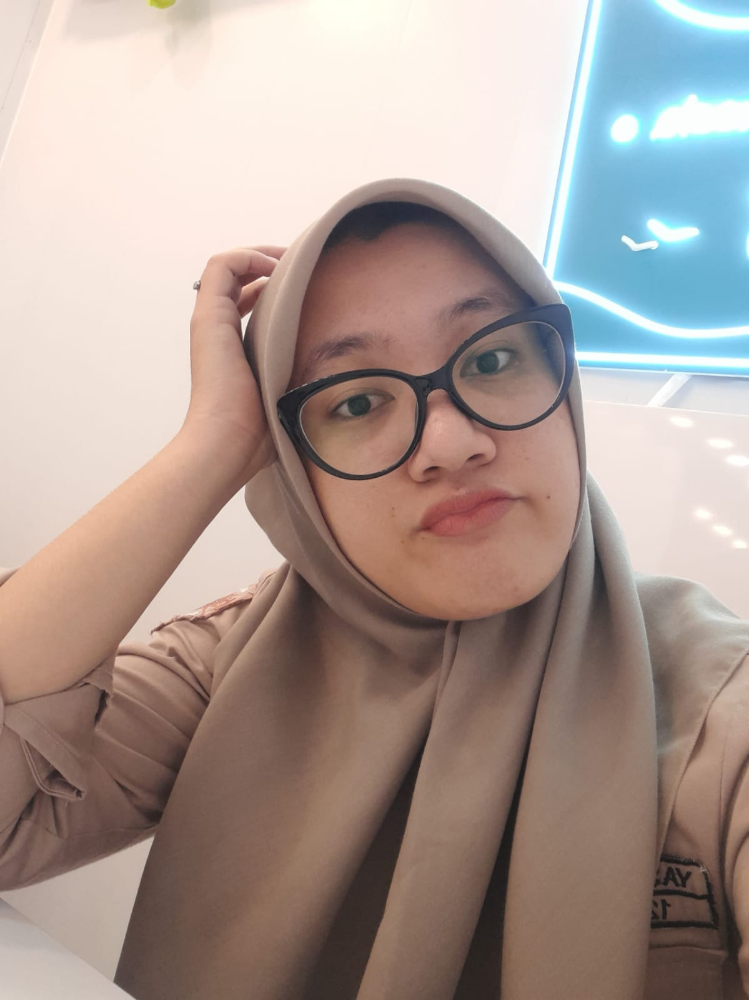

!DOCTYPE html>
<html lang="en">
<head>
  <meta charset="UTF-8">
  <meta name="viewport" content="width=device-width, initial-scale=1.0">
  <title>HME</title>
  <link href="https://cdn.jsdelivr.net/npm/tailwindcss@2.2.19/dist/tailwind.min.css" rel="stylesheet">
  <style>

    .navbar {
      position: fixed;
      top: 0;
      left: 0;
      width: 100%;
      background-color: #333;
      color: #fff;
      padding: 12px 20px;
    }
  </style>
  
</head>
<body>

  <nav class="navbar bg-black p-4">
    <div class="container mx-auto flex justify-between items-center">
      <div class="flex items-center">
        <div class="mr-4">
          
        </div>
        <div class="mr-4 ">
          
        </div>
      </div>
      <div class="hidden md:flex space-x-4">
        <a href="beeranda.html" class="text-white">Beranda</a>
        <a href="organigram.html" class="text-white">Organisasi</a>
        <a href="#" class="text-white">Galeri HME</a>
        <a href="#" class="text-white">Pembayaran Kas</a>
      </div>
      <div class="md:hidden flex items-center">
        <button id="menu-toggle-btn" class="text-white">
          <svg class="w-6 h-6" fill="none" stroke="currentColor" viewBox="0 0 24 24" xmlns="http://www.w3.org/2000/svg">
            <path strokeLinecap="round" strokeLinejoin="round" strokeWidth="2" d="M4 6h16M4 12h16m-7 6h7"></path>
          </svg>
        </button>
      </div>
    </div>
  </nav>

  <section class="hero-bg py-60 text-white">
    <div class="container mx-auto px-4">
      <div class="text-center">
        <h1 class="text-6xl font-bold">Rekam jejak Ketua Himpunan</h1>
      </div>
    </div>
  </section>

  <div class="container mx-auto p-6">
    <section class="bg-white rounded-lg shadow-lg p-6">
      <h2 class="text-2xl font-semibold mb-4">Ketua Himpunan 1</h2>
      <div class="grid grid-cols-2 gap-4">
        <div class="col-span-2">
            
        </div>
        <div>
          <label class="block font-semibold text-gray-600">Nama</label>
          <p class="text-gray-900">Muhammad Sirajuddin</p>
        </div>
        <div>
          <label class="block font-semibold text-gray-600">Umur</label>
          <p class="text-gray-900">20</p>
        </div>
        <div>
          <label class="block font-semibold text-gray-600">Pekerjaan</label>
          <p class="text-gray-900">Mahasiswa</p>
        </div>
        <div>
          <label class="block font-semibold text-gray-600">Tempat Tinggal</label>
          <p class="text-gray-900">Jakarta</p>
        </div>
        <!-- Add more fields as needed -->
      </div>

      <h2 class="text-2xl font-semibold mb-4">Ketua Himpunan 2</h2>
      <div class="grid grid-cols-2 gap-4">
        <div class="col-span-2">
            
        </div>
        <div>
          <label class="block font-semibold text-gray-600">Nama</label>
          <p class="text-gray-900">Yasmin Latifah</p>
        </div>
        <div>
          <label class="block font-semibold text-gray-600">Umur</label>
          <p class="text-gray-900">21</p>
        </div>
        <div>
          <label class="block font-semibold text-gray-600">Pekerjaan</label>
          <p class="text-gray-900">Mahasiswa</p>
        </div>
        <div>
          <label class="block font-semibold text-gray-600">Tempat Tinggal</label>
          <p class="text-gray-900">Lampung</p>
        </div>
        <!-- Add more fields as needed -->
      </div>
    </section>
  </div>


  <style>
    /* Ubah tinggi section sampul sesuai kebutuhan */
    .hero-bg {
      height: 50px;
      /* Ganti URL dengan path atau link gambar yang ingin digunakan sebagai latar belakang */
      background-image: url('riuh.jpeg');
      background-size: cover;
      background-position: center;
    }
  
    /* Ganti font sesuai preferensi Anda */
    body {
      font-family: Arial, sans-serif;
      margin: 0;
    }
  
    /* Posisi teks di tengah secara horizontal dan vertikal */
    .text-center {
      display: flex;
      flex-direction: column;
      align-items: center;
      justify-content: center; /* Menengahkan vertikal */
      height: 100%; /* Memberi tinggi 100% untuk section agar tulisan berada di tengah */
    }

    .tekpang-bg {
      width: 100%;
      background-color: #32CD32;
    }
  
    /* Ganti warna teks jika perlu */
    .text-white {
      color: white;
    }
  </style>
  
  

<script>
  const menuToggleBtn = document.getElementById('menu-toggle-btn');
  const menuLinks = document.querySelector('.hidden.md\\:flex');

  menuToggleBtn.addEventListener('click', () => {
    menuLinks.classList.toggle('hidden');
  });
</script>

</body>
</html>